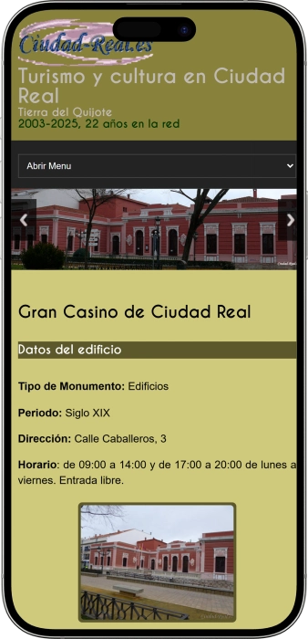

Oferta exclusiva de bienvenida de
Oferta exclusiva de bienvenida de
Descubre el Casino Online con Tradición Española
Los mejores casinos
Detalles de bonificación
Casino
Bonos
Rate
Giros gratis
Más info
Conseguir
Ventajas
- ¿Buscas un casino online de confianza con raíces españolas? Casino Ciudad Real combina tradición y tecnología moderna para ofrecerte juegos certificados, pagos rápidos y atención al cliente en español disponible las 24 horas. Esto es lo que nos distingue:
-
Licencia internacional con certificación de juego limpio y aleatorio
-
Más de 2500 juegos: slots, ruleta, blackjack, póker y casino en vivo
-
Retiros instantáneos con criptomonedas, tarjetas y billeteras electrónicas
-
Soporte 24/7 en español con chat en vivo y asistencia personalizada
-
Bonos de bienvenida hasta 200% más tiradas gratis en slots premium
-
Plataforma móvil optimizada para jugar desde cualquier dispositivo
- Únete a miles de jugadores que confían en nuestra plataforma segura y transparente. Nuestro equipo de soporte está siempre listo para ayudarte en tu idioma preferido. ¡Comienza tu aventura hoy mismo!
Ciudad Real Casino App


Nuestra Historia y Tradición
Casino Ciudad Real fusiona tradición española e innovación online. Inspirados en casinos históricos, ofrecemos juegos premium con máxima seguridad y calidad en cada experiencia.
- Expansión a más de 2500 juegos de proveedores líderes mundiales
- Introducción de mesas de casino en vivo con crupieres profesionales
- Lanzamiento de plataforma móvil compatible con iOS y Android
- Premio a la excelencia en servicio al cliente y juego responsable
Operamos con licencia internacional y certificación de juego justo. Usamos encriptación SSL bancaria para proteger datos. Nuestros juegos son auditados por organismos independientes regularmente Continuamos ampliando nuestra oferta de juegos y servicios innovadores. Nuestro compromiso con el juego responsable es prioritario. Visítanos y descubre por qué somos la opción preferida de jugadores exigentes en España.
Guía Completa de Juegos de Casino
Experiencia de Juego en Casino Ciudad Real
Casino Ciudad Real se ha consolidado como una de las plataformas de entretenimiento online más completas del mercado hispanohablante. Nuestra extensa biblioteca de juegos combina las últimas innovaciones tecnológicas con la calidad garantizada de los proveedores más prestigiosos de la industria. Cada título ha sido cuidadosamente seleccionado para ofrecer experiencias memorables que satisfacen tanto a jugadores principiantes como a veteranos experimentados. La diversidad de nuestra oferta garantiza que cada sesión de juego sea única e inolvidable.
Trabajamos exclusivamente con desarrolladores certificados que cumplen con los más rigurosos estándares internacionales de calidad y equidad. Nuestros juegos utilizan generadores de números aleatorios certificados que garantizan resultados imparciales en cada ronda. La transparencia y la justicia son pilares fundamentales de nuestra filosofía operativa, asegurando que cada jugador tenga las mismas oportunidades legítimas de ganar en cualquier momento.
Slots y Tragamonedas Modernas
Las máquinas tragamonedas representan el corazón pulsante de nuestra oferta de entretenimiento digital. Contamos con más de 1500 títulos diferentes que abarcan todas las temáticas imaginables: desde aventuras épicas en civilizaciones antiguas hasta futuristas viajes espaciales, pasando por clásicos inspirados en películas y series populares. Cada slot ofrece mecánicas únicas, funciones especiales y sistemas de bonificación que mantienen la experiencia fresca y emocionante.
Nuestros slots se clasifican en diversas categorías para facilitar tu navegación y búsqueda del juego perfecto. Las tragamonedas clásicas de tres rodillos ofrecen nostalgia y simplicidad, ideales para quienes prefieren la experiencia tradicional. Las video slots modernas de cinco o más rodillos incorporan gráficos cinematográficos en alta definición, animaciones espectaculares y bandas sonoras envolventes que transforman cada giro en una aventura audiovisual completa.
- Slots Progresivos con Jackpots Millonarios: Estos juegos conectan a jugadores de múltiples casinos en una red global, acumulando premios que pueden alcanzar cifras astronómicas. Cada apuesta contribuye al bote común, creando oportunidades de ganancias que pueden cambiar vidas instantáneamente con un solo giro afortunado.
- Megaways y Mecánicas Innovadoras: La tecnología Megaways ofrece hasta 117,649 formas diferentes de ganar en cada giro, multiplicando exponencialmente las posibilidades de combinaciones ganadoras. Funciones como cascadas, multiplicadores crecientes y compra de bonos directos añaden capas adicionales de estrategia y emoción.
- Tiradas Gratis y Rondas de Bonificación: Los mejores slots incluyen múltiples niveles de funciones bonus que se activan con símbolos especiales. Estas rondas ofrecen multiplicadores incrementados, wilds expandibles, respins gratuitos y mini-juegos interactivos que pueden generar ganancias significativamente superiores a las rondas base.
- Slots con Temáticas Exclusivas: Colaboramos con estudios de desarrollo para ofrecer títulos basados en franquicias populares, mitología universal, culturas ancestrales y conceptos originales. Cada juego cuenta una historia única a través de sus símbolos, animaciones y secuencias de bonus narrativas.
- Opciones de Volatilidad Ajustable: Nuestro catálogo incluye slots de baja, media y alta volatilidad para adaptarse a diferentes estilos de juego y gestión de bankroll. Los jugadores conservadores pueden optar por premios frecuentes pero menores, mientras que los arriesgados persiguen multiplicadores masivos con mayor riesgo.
Casino en Vivo con Crupieres Reales
La experiencia de casino en vivo representa la evolución definitiva del entretenimiento online, fusionando la comodidad del juego desde casa con la autenticidad emocional de los casinos físicos tradicionales. Nuestros estudios de transmisión cuentan con tecnología de streaming en alta definición que captura cada detalle con claridad cristalina. Crupieres profesionales capacitados conducen las partidas en tiempo real, interactuando con los jugadores mediante chat en vivo y creando un ambiente social genuino que elimina las barreras digitales.
Las mesas en vivo operan las 24 horas del día, los 7 días de la semana, garantizando disponibilidad constante sin importar tu zona horaria o horario preferido de juego. Múltiples ángulos de cámara permiten observar la acción desde diferentes perspectivas, mientras que los límites de apuesta variables acomodan desde jugadores casuales hasta high rollers exigentes. La transmisión en tiempo real elimina cualquier duda sobre la legitimidad de los resultados, proporcionando transparencia absoluta en cada ronda.
- Ruleta Europea y Americana en Vivo: Observa la bola girar en ruletas auténticas operadas por crupieres experimentados. Versiones especiales como Lightning Roulette añaden multiplicadores aleatorios de hasta 500x en números afortunados, transformando rondas ordinarias en explosiones de premios masivos.
- Blackjack con Múltiples Variantes: Juega clásico Blackjack, Infinite Blackjack con asientos ilimitados, o variantes innovadoras como Lightning Blackjack con multiplicadores aleatorios. Las reglas pueden variar sutilmente entre mesas, permitiendo elegir las condiciones más favorables para tu estrategia particular.
- Baccarat y Punto Banco Exclusivos: Experimenta la elegancia del juego favorito de altos apostadores en mesas VIP con límites elevados. Versiones como Speed Baccarat aceleran el ritmo para jugadores que prefieren acción rápida y múltiples manos por hora.
- Póker Casino: Texas Hold'em y Caribbean Stud: Enfrenta al crupier en versiones de póker diseñadas específicamente para casino. Las reglas simplificadas facilitan el aprendizaje, mientras que los bonos progresivos añaden oportunidades de premios adicionales incluso en manos perdedoras.
- Game Shows Interactivos: Títulos revolucionarios como Dream Catcher, Monopoly Live y Crazy Time combinan elementos de programas televisivos con mecánicas de casino. Presentadores carismáticos conducen rondas de bonificación espectaculares con ruedas gigantes, multiplicadores acumulativos y premios colosales.
Juegos de Mesa Tradicionales Digitales
Para aquellos momentos en que prefieres controlar completamente el ritmo de juego sin esperar a otros jugadores, nuestra sección de juegos de mesa digitales ofrece versiones RNG de los clásicos eternos. Estos juegos utilizan gráficos sofisticados que replican fielmente la experiencia visual de mesas reales, con animaciones fluidas y efectos sonoros inmersivos que recrean la atmósfera auténtica de un casino tradicional. La ventaja principal radica en la velocidad: puedes completar docenas de manos en el tiempo que tomaría jugar unas pocas en mesas en vivo.
Los juegos de mesa digitales también sirven como excelentes herramientas de aprendizaje para principiantes que desean dominar estrategias complejas sin la presión de otros jugadores esperando. Muchos títulos incluyen modos de práctica gratuitos, tablas de estrategia integradas y estadísticas detalladas que te ayudan a comprender las probabilidades matemáticas detrás de cada decisión. Esta combinación de educación y entretenimiento acelera la curva de aprendizaje significativamente.
- Ruleta Digital con Estadísticas Avanzadas: Versiones europeas, americanas y francesas con historial completo de números recientes, gráficos de sectores calientes/fríos y opciones de apuestas rápidas para repetir jugadas favoritas instantáneamente. Funciones de autoplay permiten ejecutar estrategias predefinidas automáticamente.
- Blackjack Multihand y Estrategia Perfecta: Juega hasta cinco manos simultáneamente para maximizar volumen de juego. Indicadores opcionales de estrategia básica sugieren la decisión matemáticamente óptima en cada situación, ayudándote a minimizar la ventaja de la casa progresivamente.
- Baccarat con Análisis de Patrones: Gráficos detallados muestran patrones históricos de resultados como caminos de perlas, grandes caminos y caminos de cucarachas que muchos jugadores utilizan para identificar tendencias supuestas. Aunque matemáticamente cada mano es independiente, estas herramientas añaden una dimensión estratégica adicional.
- Craps y Sic Bo para Amantes de Dados: Experimenta la emoción de los juegos de dados con interfaces intuitivas que simplifican las múltiples opciones de apuesta. Tablas explicativas integradas detallan los pagos y probabilidades de cada tipo de apuesta disponible.
- Video Póker con Retornos Superiores: Variantes como Jacks or Better, Deuces Wild y Joker Poker ofrecen algunos de los porcentajes de retorno al jugador más altos del casino cuando se juegan con estrategia óptima. Las tablas de pagos transparentes permiten calcular exactamente el RTP de cada máquina.
Bonos y Promociones Continuas
Nuestro programa de recompensas ha sido diseñado meticulosamente para agregar valor constante a tu experiencia de juego más allá de las ganancias directas en las mesas. Desde el momento en que te registras, comenzarás a acumular beneficios que se multiplican con tu actividad regular. Los bonos no son simplemente promociones temporales, sino un sistema integral que reconoce y premia la lealtad de manera continua y transparente.
Todos nuestros bonos vienen acompañados de términos claros y alcanzables que se presentan con total transparencia antes de cualquier activación. No encontrarás sorpresas desagradables en letra pequeña escondida. Los requisitos de apuesta son razonables y están dentro de los estándares más justos de la industria, asegurando que los bonos realmente beneficien tu experiencia en lugar de convertirse en obstáculos frustrantes.
- Bono de Bienvenida Estructurado: Los nuevos jugadores reciben un paquete escalonado que puede incluir hasta 200% de coincidencia en depósitos iniciales más cientos de tiradas gratis en slots seleccionados. La estructura escalonada distribuye el valor a través de tus primeros depósitos, maximizando el bankroll inicial significativamente.
- Promociones Semanales Rotativas: Cada semana activamos ofertas temáticas diferentes como torneos de slots con premios acumulados, devoluciones de cashback en juegos de mesa, o multiplicadores de puntos de lealtad en títulos específicos. Esta rotación mantiene la experiencia dinámica y ofrece razones constantes para explorar secciones nuevas.
- Programa VIP con Niveles Progresivos: A medida que juegas, asciendes automáticamente través de niveles VIP que desbloquean privilegios crecientes: gestores de cuenta personales, límites de retiro incrementados, bonos exclusivos personalizados, invitaciones a eventos especiales y tasas de conversión de puntos mejoradas.
- Cashback Semanal sin Condiciones: Recupera un porcentaje de pérdidas netas semanales como efectivo real sin requisitos de apuesta adicionales. Este sistema actúa como red de seguridad que suaviza las rachas negativas inevitables y extiende tu tiempo de juego efectivo.
- Torneos con Prize Pools Garantizados: Compite contra otros jugadores en competiciones programadas regularmente con premios totales garantizados que se distribuyen entre los mejores clasificados. Algunos torneos son gratuitos, mientras que otros requieren buy-ins modestos pero ofrecen premios desproporcionadamente grandes.
Seguridad y Juego Responsable
La protección de nuestros jugadores constituye la piedra angular de nuestras operaciones diarias. Implementamos protocolos de seguridad de nivel empresarial que protegen tu información personal y financiera con el mismo rigor que instituciones bancarias internacionales. La encriptación SSL de 256 bits codifica todas las transmisiones de datos entre tu dispositivo y nuestros servidores, haciendo prácticamente imposible cualquier interceptación maliciosa durante las transacciones o sesiones de juego.
Nuestro compromiso con el juego responsable va más allá del cumplimiento regulatorio mínimo. Proporcionamos herramientas comprehensivas que te empoderan para mantener control total sobre tu actividad de juego. Establecer límites no es señal de debilidad sino de madurez estratégica, y facilitamos este proceso mediante interfaces intuitivas que hacen que configurar restricciones sea simple e inmediato. Nuestro equipo de soporte está entrenado para reconocer señales de problemas potenciales y ofrecer asistencia discreta y profesional.
- Límites Personalizables en Tiempo Real: Configura límites diarios, semanales o mensuales para depósitos, pérdidas, apuestas individuales y tiempo de sesión. Estos controles se aplican instantáneamente y pueden ajustarse hacia restricciones más severas en cualquier momento, con períodos de reflexión obligatorios antes de aumentar límites.
- Autoexclusión Temporal o Permanente: Si necesitas tomar un descanso, puedes autoexcluirte por períodos predefinidos desde 24 horas hasta meses completos, o permanentemente si consideras que es la decisión apropiada. Durante la exclusión, tu cuenta permanece completamente inaccesible sin excepciones.
- Verificación de Identidad Rigurosa: Procesos KYC (Know Your Customer) previenen el juego de menores y protegen contra fraudes de identidad. Aunque estos controles pueden parecer engorrosos inicialmente, garantizan que tu cuenta permanezca segura y que los retiros se procesen sin complicaciones posteriores.
- Recursos de Ayuda Externa: Mantenemos enlaces directos a organizaciones especializadas en prevención y tratamiento de ludopatía. Estas entidades independientes ofrecen asesoramiento confidencial y programas de recuperación sin costo alguno para quienes los necesiten.
- Transparencia en Porcentajes RTP: Publicamos los retornos teóricos al jugador de todos nuestros juegos, permitiéndote tomar decisiones informadas sobre dónde invertir tu tiempo y presupuesto. Esta información empodera a los jugadores para elegir conscientemente los juegos más favorables matemáticamente.
La combinación de entretenimiento de calidad, seguridad robusta y prácticas éticas posiciona a Casino Ciudad Real como la elección preferida de jugadores informados y responsables. Nuestra reputación se construye día a día mediante experiencias positivas reales de miles de miembros satisfechos que valoran tanto las emociones del juego como la tranquilidad de una plataforma confiable y transparente.
Proveedores de software
Métodos de Pago y Gestión de Cuenta
Depósitos y Retiros Seguros en Casino Ciudad Real
La flexibilidad financiera representa uno de los pilares fundamentales de nuestra propuesta de valor hacia los jugadores. Comprendemos que cada usuario tiene preferencias únicas respecto a cómo gestiona su dinero online, y hemos invertido recursos significativos en construir una infraestructura de pagos que acomode prácticamente cualquier método popular disponible actualmente. Desde opciones tradicionales como transferencias bancarias y tarjetas de crédito hasta soluciones modernas como criptomonedas y billeteras electrónicas, nuestro sistema procesa transacciones con eficiencia, seguridad y velocidades competitivas.
Todos los métodos de pago integrados en nuestra plataforma han pasado exhaustivas evaluaciones de seguridad y confiabilidad antes de su implementación. Colaboramos exclusivamente con procesadores financieros reconocidos internacionalmente que cumplen con regulaciones PCI-DSS y mantienen historial probado de protección de datos sensibles. Esta diligencia garantiza que tu información financiera permanece protegida bajo múltiples capas de seguridad durante todo el ciclo de vida de las transacciones.
Opciones de Depósito Instantáneo
Los depósitos representan tu puerta de entrada hacia el entretenimiento, y hemos optimizado este proceso para eliminar fricciones innecesarias. La mayoría de nuestros métodos de depósito acreditan fondos instantáneamente en tu cuenta de juego, permitiéndote comenzar a jugar literalmente segundos después de confirmar la transacción. No encontrarás esperas prolongadas ni procesos complicados que interfieran con tu experiencia de usuario.
La diversidad de opciones asegura que independientemente de tu ubicación geográfica o preferencias personales, encontrarás al menos varios métodos convenientes a tu disposición. Los montos mínimos de depósito se mantienen deliberadamente bajos para acomodar jugadores casuales, mientras que los límites máximos elevados satisfacen las necesidades de high rollers sin restricciones arbitrarias frustrantes.
- Tarjetas de Crédito y Débito (Visa/Mastercard): El método más universal y familiar para millones de usuarios. Acreditación instantánea con verificación 3D Secure adicional que añade una capa extra de protección contra transacciones fraudulentas. Compatible con tarjetas emitidas en prácticamente cualquier país del mundo.
- Billeteras Electrónicas (Skrill, Neteller, PayPal): Velocidad máxima combinada con privacidad mejorada, ya que no compartes detalles bancarios directamente con el casino. Ideales para jugadores que valoran la compartimentación de finanzas personales y transacciones de entretenimiento en cuentas separadas.
- Transferencias Bancarias Directas: Aunque tradicionalmente más lentas, hemos implementado versiones instantáneas como Trustly e inmediatas SEPA que conectan directamente con tu banco sin intermediarios. Perfectas para depósitos grandes que exceden límites de otros métodos.
- Criptomonedas (Bitcoin, Ethereum, Litecoin, USDT): La frontera moderna de transacciones financieras online ofrece anonimato superior, comisiones mínimas y procesamiento descentralizado que elimina intermediarios bancarios. Especialmente populares entre jugadores que valoran privacidad máxima y libertad financiera.
- Tarjetas Prepago (Paysafecard): Solución perfecta para quien prefiere no vincular cuentas bancarias o tarjetas personales. Compras códigos con efectivo en puntos de venta físicos y los canjeas online, manteniendo separación completa entre identidad personal y actividad de juego.
- Métodos Locales Especializados: Dependiendo de tu región, ofrecemos opciones específicas como Bizum en España, MuchBetter en Europa, o Interac en Canadá. Estos métodos optimizados regionalmente frecuentemente ofrecen ventajas en velocidad y comisiones sobre alternativas internacionales genéricas.
Proceso de Retiro Verificado
Retirar tus ganancias debe ser tan satisfactorio como ganarlas inicialmente. Hemos diseñado nuestro sistema de retiros priorizando velocidad, transparencia y seguridad en igual medida. Aunque verificaciones regulatorias obligatorias pueden añadir tiempo a tu primer retiro, una vez completado el proceso KYC inicial, las solicitudes subsiguientes se procesan significativamente más rápido.
La transparencia absoluta caracteriza nuestra comunicación sobre tiempos de procesamiento. Nunca encontrarás promesas infladas seguidas de retrasos frustrantes. Especificamos claramente los plazos realistas para cada método, considerando tanto nuestro procesamiento interno como los tiempos de transferencia del proveedor de pagos. Esta honestidad construye confianza mucho más efectivamente que promesas imposibles de cumplir.
- Verificación de Identidad Inicial: Antes de tu primer retiro, necesitarás proporcionar documentación estándar como identificación oficial con fotografía, comprobante de domicilio reciente y potencialmente confirmación del método de pago utilizado. Este proceso protege tanto al casino como al jugador contra actividades fraudulentas y cumple con regulaciones antilavado de dinero.
- Tiempos de Procesamiento Diferenciados: Las billeteras electrónicas y criptomonedas típicamente se procesan en 24-48 horas. Tarjetas de crédito requieren 3-5 días hábiles. Transferencias bancarias tradicionales pueden extenderse hasta 5-7 días hábiles. Estos plazos incluyen tanto nuestra revisión interna como los tiempos del proveedor financiero.
- Límites de Retiro Estructurados: Jugadores estándar tienen límites mensuales razonables que acomodan ganancias típicas cómodamente. Miembros VIP disfrutan límites sustancialmente incrementados o completamente eliminados, reconociendo su volumen de juego y lealtad demostrada. Ganancias progresivas masivas se manejan mediante arreglos personalizados.
- Mismo Método de Depósito: Por razones regulatorias, generalmente debes retirar usando el mismo método empleado para depositar. Esta política previene el uso de casinos como vehículos de lavado de dinero y protege la integridad del ecosistema financiero global.
- Reversión de Retiros Pendientes: Mientras tu retiro permanece en estado pendiente durante el período de procesamiento, puedes cancelarlo y devolver fondos a tu balance de juego si cambias de opinión. Una vez procesado y enviado al proveedor de pagos, la transacción se vuelve irreversible.
Comparativa de Métodos de Pago
Para facilitar tu decisión sobre qué método utilizar según tus prioridades específicas, hemos preparado una tabla comparativa que resume las características principales de cada opción. Esta información te permite evaluar rápidamente qué alternativa equilibra mejor velocidad, costos, privacidad y conveniencia según tus necesidades particulares.
Esta tabla refleja condiciones estándar que pueden variar ocasionalmente según circunstancias especiales como promociones temporales, cambios en regulaciones de proveedores de pago o situaciones extraordinarias del sistema financiero global. Siempre recomendamos verificar los términos exactos al momento de realizar tu transacción para garantizar información actualizada.
Gestión de Cuenta y Configuración
Tu panel de cuenta personal funciona como centro de comando integral desde donde controlas todos los aspectos de tu experiencia en Casino Ciudad Real. La interfaz ha sido diseñada siguiendo principios de usabilidad modernos que priorizan accesibilidad intuitiva sobre complejidad innecesaria. Incluso usuarios sin experiencia técnica significativa navegan fácilmente las diversas secciones disponibles.
Hemos centralizado funciones críticas como historial de transacciones detallado, registro completo de apuestas con filtros avanzados, configuración de límites de juego responsable, actualización de información personal, gestión de bonos activos y preferencias de comunicación. Esta consolidación elimina la frustración de buscar opciones escondidas en menús confusos o páginas secundarias difíciles de localizar.
- Historial Completo de Actividad: Accede a registros detallados de cada apuesta realizada, cada depósito procesado y cada retiro solicitado con marcas de tiempo precisas. Exporta estos datos en formatos estándar para análisis personal o archivos de contabilidad personal si lo requieres.
- Configuración de Preferencias de Comunicación: Controla exactamente qué tipos de comunicaciones deseas recibir y mediante qué canales. Puedes suscribirte selectivamente a notificaciones de promociones, recordatorios de bonos, actualizaciones de producto o desactivar completamente comunicaciones de marketing manteniendo solo alertas esenciales de seguridad.
- Autenticación de Dos Factores (2FA): Añade una capa adicional de seguridad requiriendo un código temporal desde tu dispositivo móvil además de tu contraseña para acceder a tu cuenta. Esta protección hace prácticamente imposible el acceso no autorizado incluso si alguien compromete tu contraseña.
- Seguimiento de Bonos Activos: Visualiza el estado de todos tus bonos activos con barras de progreso claras que muestran exactamente cuánto has completado de los requisitos de apuesta. Cronómetros de cuenta regresiva indican cuándo expiran bonos temporales, eliminando sorpresas desagradables de bonificaciones caducadas.
- Actualización de Documentación KYC: Si tu documentación de verificación expira o cambias información personal relevante como dirección, puedes subir documentos actualizados directamente desde tu panel. Nuestro equipo los revisa típicamente dentro de 24-48 horas con notificaciones automáticas sobre el estado de aprobación.
Soporte al Cliente Multicanal
El soporte excepcional diferencia experiencias memorables positivamente de frustraciones que alejan permanentemente a los usuarios. Hemos construido un equipo de profesionales multilingües disponibles las 24 horas del día, los 7 días de la semana, incluyendo fines de semana y festivos. No importa cuándo surja tu pregunta o problema, encontrarás asistencia humana genuina lista para ayudarte efectivamente.
Nuestro equipo recibe entrenamiento continuo tanto en aspectos técnicos de la plataforma como en habilidades de servicio al cliente. Valoramos la resolución en primer contacto, evitando escalamientos innecesarios que prolongan tu espera. La empatía genuina combinada con conocimiento técnico profundo resulta en resoluciones rápidas que te permiten volver a disfrutar tu experiencia de juego sin demoras prolongadas.
- Chat en Vivo 24/7: El canal más popular por su inmediatez conecta instantáneamente con agentes reales (no chatbots frustrantes) que pueden resolver la mayoría de consultas en minutos. Transcripciones completas de conversaciones se guardan automáticamente en tu cuenta para referencia futura.
- Email con Respuesta Garantizada: Para consultas complejas que requieren investigación o adjuntar documentación detallada, el email ofrece comunicación asíncrona conveniente. Garantizamos respuestas iniciales dentro de 12 horas con seguimientos hasta resolución completa.
- Teléfono Directo Internacional: Jugadores VIP y situaciones urgentes se benefician de líneas telefónicas directas que conectan con supervisores senior. Esta opción elimina completamente intermediarios digitales cuando prefieres comunicación vocal directa.
- Centro de Ayuda con FAQ Extenso: Nuestra base de conocimientos contiene artículos detallados que responden las preguntas más frecuentes organizados por categorías intuitivas. Videos tutoriales complementan las explicaciones textuales para aprendices visuales.
- Redes Sociales y Comunidad: Mantienen presencia activa en plataformas sociales principales donde publicamos actualizaciones, respondemos consultas públicas y construimos comunidad entre jugadores. Algunos usuarios prefieren estos canales informales para interacciones menos formales.
Compatibilidad Multiplataforma
La flexibilidad de jugar desde prácticamente cualquier dispositivo con conexión a internet representa ventaja fundamental del entretenimiento online moderno. Hemos desarrollado nuestra plataforma utilizando tecnologías web responsivas de última generación que adaptan automáticamente la interfaz al tamaño de pantalla y capacidades del dispositivo que estés utilizando. Esta universalidad garantiza experiencias consistentemente excelentes independientemente de si juegas desde computadora de escritorio, laptop, tablet o smartphone.
Nuestras aplicaciones móviles nativas para iOS y Android ofrecen ventajas adicionales sobre la versión web móvil, incluyendo notificaciones push para promociones exclusivas, acceso offline a historial de cuenta y optimizaciones de rendimiento específicas de plataforma que maximizan velocidad y responsividad. Sin embargo, incluso sin descargar aplicaciones, la experiencia web móvil resulta completamente funcional y satisfactoria.
- Diseño Responsivo Automático: La interfaz detecta tu dispositivo y reorganiza elementos para maximizar usabilidad. Botones se dimensionan apropiadamente para interacción táctil, menús se colapsan en versiones móviles para no ocupar espacio precioso, y gráficos se optimizan para velocidades de carga rápidas en conexiones móviles.
- Sincronización de Progreso en Tiempo Real: Tu balance, bonos activos y progreso de apuestas se sincronizan instantáneamente entre todos tus dispositivos. Puedes comenzar jugando un slot en tu computadora de escritorio durante la mañana y continuar exactamente desde donde lo dejaste en tu teléfono durante tu descanso de almuerzo.
- Optimización de Ancho de Banda: Detectamos automáticamente la velocidad de tu conexión y ajustamos la calidad de streaming de juegos en vivo para evitar interrupciones buffering frustrantes. En conexiones limitadas, reducimos ligeramente la resolución priorizando fluidez sobre definición máxima.
- Compatibilidad con Navegadores Modernos: Soportamos todas las versiones recientes de Chrome, Firefox, Safari, Edge y Opera. No requieres plugins obsoletos como Flash, ya que toda nuestra plataforma utiliza HTML5 moderno universalmente compatible y seguro.
- Modo Offline para Datos de Cuenta: Las aplicaciones móviles cachean información de cuenta permitiendo consultar historial, verificar estado de bonos y revisar reglas de juegos incluso cuando temporalmente pierdes conexión a internet. Obviamente el juego real requiere conectividad, pero información de referencia permanece accesible.
La combinación de opciones de pago flexibles, gestión de cuenta intuitiva, soporte excepcional y compatibilidad universal crea un ecosistema integral que elimina puntos de fricción comunes. Esta atención meticulosa a detalles operativos complementa perfectamente la calidad de nuestro catálogo de juegos, resultando en una propuesta de valor comprehensiva que satisface tanto las expectativas de entretenimiento como las necesidades prácticas de funcionalidad confiable.
Preguntas frecuentes
Para registrarte, haz clic en el botón "Registrarse" en la parte superior de la página. Completa el formulario con tu información personal, crea una contraseña segura y verifica tu dirección de correo electrónico. El proceso toma menos de 3 minutos. Después de la verificación inicial, podrás realizar tu primer depósito y comenzar a jugar de inmediato con acceso completo a todos nuestros juegos.
Los nuevos jugadores reciben un paquete de bienvenida que incluye hasta 200% de bonificación en el primer depósito más tiradas gratis en slots seleccionados. Por ejemplo, si depositas €50, recibirás €100 adicionales para jugar. Los requisitos de apuesta son 40x el monto del bono. Además, ofrecemos promociones semanales rotativas con cashback, torneos y bonos de recarga para jugadores existentes.
Los tiempos de retiro dependen del método elegido. Billeteras electrónicas como Skrill y Neteller se procesan en 24-48 horas. Tarjetas de crédito requieren 3-5 días hábiles. Transferencias bancarias pueden tomar 5-7 días. Criptomonedas se procesan en 24-48 horas. Tu primer retiro requerirá verificación KYC que añade 24-48 horas adicionales. Retiros posteriores son significativamente más rápidos una vez verificado.
Absolutamente. Operamos con licencia internacional de gaming y utilizamos encriptación SSL de 256 bits para proteger todos tus datos personales y financieros. Nuestros juegos son auditados regularmente por organismos independientes que certifican la aleatoriedad y equidad. Cumplimos con todas las regulaciones de protección de datos y antilavado de dinero. Además, ofrecemos herramientas de juego responsable como límites personalizables y autoexclusión.
Sí, Casino Ciudad Real está completamente optimizado para dispositivos móviles. Puedes jugar directamente desde el navegador de tu smartphone o tablet sin descargar nada. También ofrecemos aplicaciones nativas para iOS y Android que proporcionan experiencia mejorada con notificaciones push y acceso más rápido. Todos los juegos, funciones de cuenta y métodos de pago están disponibles en la versión móvil sin restricciones.
Aceptamos una amplia variedad de métodos: tarjetas Visa y Mastercard, billeteras electrónicas como Skrill, Neteller y PayPal, transferencias bancarias directas, criptomonedas incluyendo Bitcoin y Ethereum, tarjetas prepago como Paysafecard, y métodos locales como Bizum para España. La mayoría de depósitos son instantáneos. Puedes retirar usando el mismo método que utilizaste para depositar cumpliendo con regulaciones financieras.
No es necesario descargar ningún software. Todos nuestros juegos funcionan directamente en tu navegador utilizando tecnología HTML5 moderna. Simplemente accede al sitio web, inicia sesión y comienza a jugar instantáneamente. Si prefieres, puedes descargar nuestras aplicaciones móviles opcionales para iOS y Android que ofrecen características adicionales como notificaciones de promociones, pero la versión web es completamente funcional sin descargas.
Sí, nuestro equipo de soporte está disponible 24/7 en español y otros idiomas. Puedes contactarnos mediante chat en vivo para respuestas inmediatas, por correo electrónico con garantía de respuesta en 12 horas, o por teléfono directo para asuntos urgentes. También mantenemos un centro de ayuda extenso con artículos en español que responden las preguntas más frecuentes. Nuestro equipo está entrenado específicamente para asistir a jugadores hispanohablantes.
Absolutamente. Ofrecemos herramientas comprehensivas de juego responsable. Puedes establecer límites diarios, semanales o mensuales para depósitos, pérdidas, apuestas individuales y tiempo de sesión directamente desde tu cuenta. También puedes solicitar autoexclusión temporal desde 24 horas hasta varios meses, o permanente si lo consideras necesario. Proporcionamos enlaces a organizaciones de ayuda especializadas y nuestro equipo de soporte está entrenado para asistir discretamente.
Sí, todos nuestros juegos utilizan generadores de números aleatorios (RNG) certificados por laboratorios independientes reconocidos internacionalmente. Estos sistemas garantizan que cada resultado es completamente aleatorio e impredecible. Publicamos los porcentajes de retorno al jugador (RTP) de todos los juegos transparentemente. Nuestros proveedores de software están licenciados y auditados regularmente. La equidad y transparencia son fundamentales para nuestra operación y reputación.